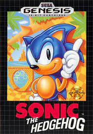

- 1985- Nintendo lanzó Super Mario Bros., que se convirtió en un icono de la cultura pop y en uno de los videojuegos más vendidos de todos los tiempos.

- 1989- Sega lanzó la Sega Genesis (Mega Drive fuera de América del Norte), compitiendo con la NES de Nintendo.

- 1991- Sonic the Hedgehog fue lanzado para Sega Genesis, convirtiéndose en la mascota de Sega.
